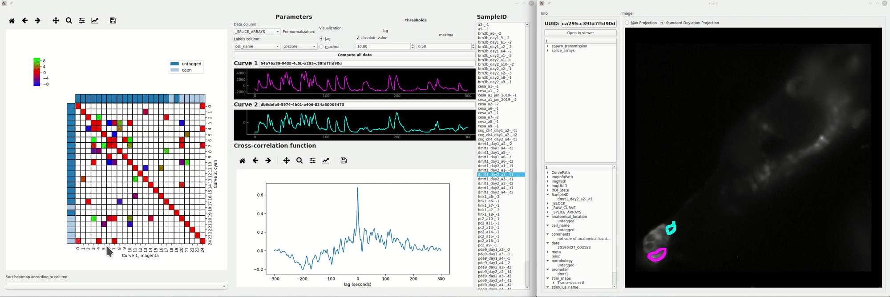

Cross Correlation¶
Explore Cross-correlation functions of all curves from a sample. Normalized cross-correlations are computed using tslearn.cycc.normalized_cc
This is an interactive widget. You can click on the individual cells in the heatmap to view the individual curves, the cross-correlation function of the two curves, and the spatial localization of the ROI that they originate from.
Layout¶

{kind=link}
Left: Lag or Maxima Matrix (see below) with thresholds applied and visualized as a heatmap. When you click on the individual cells it will open/update the Datapoint Tracer according to the two curves the cell corresponds to.
Top Center: Parameters.
Center: When you click on a cell in the heatmap you will see Curve 1 (x-axis of heatmap), and Curve 2 (y-axis of heatmap) and their cross-correlation function. The units are in seconds for all of these
Right: List of Samples. Click on a Sample to select it as the current sample.
Lag Matrix¶
- Computed as follows:
- A 2D array is created where each element is a cross-correlation function (represented by a 1D numerical array).
- The x-distance (time) between zero and the global maxima of the cross-correlation function (called \(lag\)) is computed for each of these elements.
- The 2D array of cross-correlation functions is reduced to a 2D array of these \(lag\) values.
The result is a matrix where each element is the x-distance between zero and the global maxima of the cross-correlation of the two curves the element represents.
Maxima Matrix¶
Similar to computation of the Lag Matrix above, but instead of using the \(lag\) between zero and the global maxima it uses the y-value of the global maxima.
Parameters¶
Data column: The data column, containing numerical arrays, that are used as the input curves for computing cross-correlations.
Labels column: The labels column, containing categorical labels, that are used for the row and column labels in the heatmaps.
Pre-normalization: Option to perform 0 - 1 Normalization (Same method as the Normalize) or Z-Score of the input curves prior to computing their cross-correlation functions.
Compute all data: Appy the parameters and compute cross-correlation data for all Samples in the DataFrame of the input transmission.
Thresholds¶
Apply thresholds for \(lag\) and the maxima value. The colormap limits of the heatmap are set according to this threshold and all data under are set to white on the heatmap (you can still click and explore them).
Thresholds are applied live onto the heatmap.